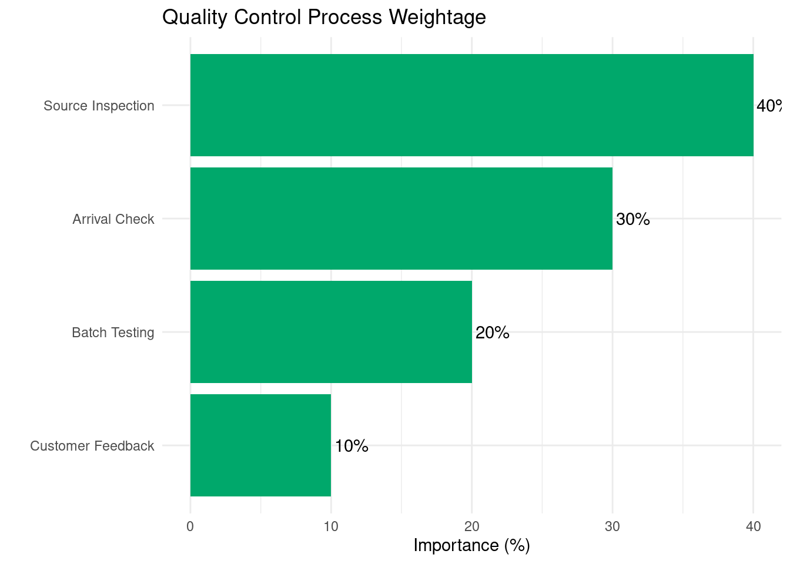
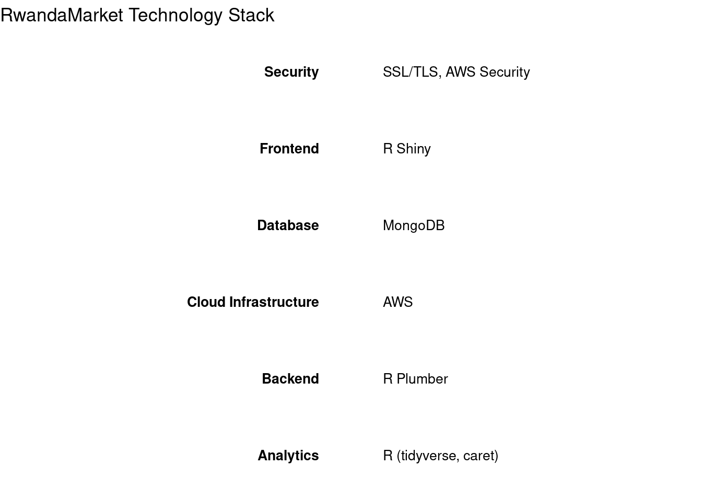

Market Analysis
Rwandan Products in the Global and Regional Market
RwandaMarket offers a unique blend of B2C and B2B products and B2B services, all centered around authentic Rwandan goods and cross-border trade facilitation. RwandaMarket’s focus on authentic Rwandan products, combined with a tech-driven approach, positions the company to capitalize on the growing demand for unique, ethically-sourced goods in the East African market. Rwanda has gained recognition for several premium products that have strong market demand:

Target Market Segments
RwandaMarket’s target market can be segmented into three main categories: B2C product sales, B2B product sales and B2B services.
B2C Product sales
Urban Professionals (25-45 years)
Expatriates and Tourists
Conscious Consumers
Cultural Enthusiasts
B2B Product sales
Retail Businesses
Hospitality Industry
Corporate Gift Market
Specialty Coffee Shops and Tea Houses
B2B Services
Cross-Border Trade Facilitation
Market Intelligence
Supply Chain Analytics
Blockchain-Enabled Product Authentication
Product Sourcing and Quality Control
Sourcing Process
Quality Control Measures

Trade partners
This section provides comprehensive information on various cooperative societies in Rwanda that can serve as reliable suppliers for different products. These cooperatives play a crucial role in supporting local communities and ensuring the quality and authenticity of Rwandan products.
Coffee Cooperatives
| Name | Umbrella_Body | Certifications | Products | Contact | Praise |
|---|---|---|---|---|---|
| Abahuzamugambi Ba Kawa | National Agricultural Export Development Board (NAEB) | Fair Trade, Rainforest Alliance | Bourbon Arabica Coffee (Washed, Natural) | info@abahuzamugambi.rw | +250 788 123 456 | Cup of Excellence winner 2008, 2012 |
| Koakaka | NAEB | Organic, UTZ Certified | Bourbon Arabica Coffee (Washed, Honey) | koakaka@gmail.com | +250 788 234 567 | Rwanda Taste of Harvest winner 2019 |
| Kopakama | Fair Trade, Organic | Bourbon Arabica Coffee (Washed, Natural) | kopakama@yahoo.com | +250 788 345 678 | Featured in Starbucks Reserve program |
Tea Cooperatives
| Name | Umbrella_Body | Certifications | Products | Contact | Praise |
|---|---|---|---|---|---|
| Kobacyamu | Rwanda Tea Cooperative Federation (FERWACOTHE) | Rainforest Alliance, ISO 9001 | Black Tea, Green Tea, White Tea | kobacyamu@tea.rw | +250 788 456 789 | Best Tea Award at East African Tea Trade Association 2020 |
| Coothemuki | FERWACOTHE | Organic, Fair Trade | Black Tea, Orthodox Tea | coothemuki@gmail.com | +250 788 567 890 | Recognized for sustainable practices by NAEB 2021 |
| Assopthe | UTZ Certified, ISO 22000 | Black Tea, Green Tea, Purple Tea | assopthe@yahoo.com | +250 788 678 901 | Highest quality score in Rwanda Tea Authority audit 2022 |
Handicraft Cooperatives
| Name | Umbrella_Body | Certifications | Products | Contact | Praise |
|---|---|---|---|---|---|
| Cocoki | Rwanda Arts Council | Fair Trade Certified | Agaseke Baskets, Sisal Jewelry, Kitenge Textiles | info@cocoki.org | +250 788 789 012 | Featured in Vogue magazine 2021 |
| Covanya | UNESCO Intangible Cultural Heritage | Imigongo Art, Wooden Sculptures | covanya.art@gmail.com | +250 788 890 123 | Smithsonian Folklife Festival participant 2019 | |
| Ibaba | WFTO Guaranteed Fair Trade | Embroidery, Modern Kitenge Fashion, Home Decor | ibaba.rwanda@yahoo.com | +250 788 901 234 | Collaboration with international fashion brands |
Other Product Cooperatives
| Name | Umbrella_Body | Certifications | Products | Contact | Praise |
|---|---|---|---|---|---|
| Apicula | Rwanda Beekeepers Cooperative Federation | Organic Certification, HACCP | Raw Honey, Beeswax, Propolis | apicula.honey@gmail.com | +250 788 012 345 | Gold Medal at ApiMondia International Apiculture Congress 2023 |
| Koama | Rwanda Horticulture Interprofessional Organization | ISO 22000, FSSC 22000 | Akabanga Chili Oil, Hot Sauce, Dried Chili | info@koama.rw | +250 788 123 456 | Featured in National Geographic's 'World's Hottest Foods' 2022 |
| Indatwa | Rwanda Textile Development Agency | OEKO-TEX Standard 100 | Kitenge Fabrics, Ready-to-wear Clothing, Accessories | indatwa.textiles@yahoo.com | +250 788 234 567 | Best Textile Innovation Award at Africa Fashion Week 2021 |
Conclusion
These cooperatives represent a selection of potential suppliers for various Rwandan products. They are recognized for their quality, certifications, and contributions to their respective industries. When considering partnerships, it’s important to conduct thorough due diligence, visit the cooperatives if possible, and ensure their practices align with your business values and quality standards.
Pricing Strategy
B2C Pricing
Our B2C pricing strategy aims to position our products as premium, authentic Rwandan goods. Prices are set to reflect the quality and uniqueness of the items, while remaining competitive in the Nairobi market.
[PLACEHOLDER: Specific pricing examples]
B2B Pricing
Our B2B services are priced using a tiered model, with basic packages for small businesses and more comprehensive solutions for larger enterprises. We also offer customized pricing for bespoke services.
[PLACEHOLDER: Specific pricing examples]
Our comprehensive range of products and services, coupled with our commitment to quality and authenticity, positions RwandaMarket as a unique player in the East African market.
Market Size, Growth Projections, and Trends
Overview of the East African E-commerce Market
The East African e-commerce market, particularly in Kenya and Rwanda, is experiencing rapid growth that align well with RwandaMarket’s focus on premium, culturally significant products; driven by several key trends e.g. increasing internet penetration, smartphone adoption, and a growing middle class. This analysis focuses on the opportunities for RwandaMarket in facilitating trade of high-quality Rwandan products to the Kenyan market.
- Overall E-commerce Market:
- The African e-commerce market is projected to grow from $33.3 billion in 2022 to $56 billion by 2025, with an annual growth rate of 19.1% [4].
- Kenya, as a leader in East African e-commerce, is expected to see its e-commerce market reach $2.5 billion by 2025, growing at 25% annually [5].
- Rwanda’s e-commerce market, while smaller, is growing rapidly at 30% annually and is projected to reach $200 million by 2025 [3].
- 48% of Kenyan online shoppers discover products through social media platforms [9].
- 52% of East African e-commerce consumers expect personalized shopping experiences [12].
- Sustainability and Ethical Production:
- 41% of Kenyan consumers are willing to pay more for sustainable and ethically produced goods [10].
These trends highlight the importance of a strong social media presence and personalized marketing strategies for RwandaMarket.

This graph illustrates the projected growth of the overall African e-commerce market alongside the specific product categories that RwandaMarket focuses on. While the scale of the specialty product markets is smaller, their growth rates are significant, presenting substantial opportunities for niche e-commerce platforms like RwandaMarket.
The rapid growth in both the overall e-commerce market and the specific product categories that RwandaMarket specializes in, coupled with the identified market trends, indicates a favorable environment for the company’s expansion. The increasing demand for premium, culturally significant, and sustainably produced products from Rwanda in the broader East African market, particularly in Kenya, suggests a strong potential for RwandaMarket’s unique offering.
By leveraging these trends and focusing on high-quality, authentic Rwandan products, RwandaMarket is well-positioned to capture a significant share of the growing e-commerce market in East Africa.
Data sources: [3], [4], [5], [9], [10], [11], [12], [13], [16], [17], [19], [20], [21]
Competitor Analysis
1. Direct Competitors
- Jumia Kenya
- Strengths: Wide reach, established brand
- Weaknesses: Less focus on artisanal products
- Kilimall
- Strengths: Strong in electronics and fashion
- Weaknesses: Limited offering in authentic African products
- Masoko (by Safaricom)
- Strengths: Backed by major telecom, integrated M-Pesa
- Weaknesses: Newer to the market, still building product range
2. Indirect Competitors
- Traditional Markets and Souvenir Shops
- Strengths: Physical presence, haggling experience
- Weaknesses: Limited reach, inconsistent quality
- African-Focused Etsy Sellers
- Strengths: Global reach, unique products
- Weaknesses: Higher shipping costs, longer delivery times
- Local Rwandan Product Exporters
- Strengths: Direct sourcing relationships
- Weaknesses: Often lack e-commerce capabilities
3. Competitive Positioning Map

Key Market Drivers
- According to the International Trade Centre (ITC), the African e-commerce market was valued at $20 billion in 2020, with projections to reach $84 billion by 2030[1].
- Kenya leads East Africa in e-commerce adoption, with 89% of its internet users shopping online[2].
- Cultural Exchange: Growing interest in pan-African cultural exchange and solidarity, creating demand for authentic products from neighboring countries.
- Rwanda’s e-commerce market, while smaller, is growing rapidly, with a projected annual growth rate of 30% between 2021 and 2025[3].
- Increasing Internet Penetration (proof)
- Smartphone Adoption (proof)
- Growing Middle Class estimated to reach 15% of the East African population by 2030 (proof)
- Improved Logistics from Investments in infrastructure enhancing last-mile delivery capabilities (evidence)
- Government Initiatives supportive policies promoting digital trade and cross-border e-commerce. (examples??)
Regulatory Environment
Understanding and navigating the trade regulations governing commerce between Rwanda and Kenya is crucial for RwandaMarket’s successful cross-border operations. We are committed to ensuring full compliance with all relevant laws and treaties.
Key Trade Agreements and Regulatory Frameworks
1. East African Community (EAC) Regulations
EAC Customs Union
- Facilitates duty-free movement of goods within the EAC
- Implements a Common External Tariff (CET) for goods imported from outside the EAC
- Provides harmonized customs procedures
Common Market Protocol
- Allows free movement of goods, services, and capital among EAC member states
2. African Continental Free Trade Area (AfCFTA)
Both Rwanda and Kenya are signatories to the AfCFTA, which aims to create a single continental market for goods and services, further facilitating cross-border trade.
3. Kenyan E-commerce Regulations
Data Protection Act (2019)
- Ensures protection of personal data in digital transactions
- Requires compliance in data collection, processing, and storage
Consumer Protection Act
- Safeguards consumer rights in digital transactions
- Outlines responsibilities of e-commerce platforms in consumer protection
Import/Export Procedures
Documentation Required
- Commercial Invoice
- Packing List
- Certificate of Origin
- Bill of Lading/Airway Bill
- Import Declaration Form (IDF)
- Pre-Export Verification of Conformity (PVoC)
EAC Certificate of Origin
- Required for preferential tariff treatment within the EAC
- Proves that goods originate from within the EAC
Customs Clearance Process
[PLACEHOLDER: Step-by-step guide to the customs clearance process]
Product-Specific Regulations
Coffee and Tea
- Phytosanitary certificates required
- Quality standards set by the East African Standards Committee
Handicrafts
- Cultural property export permits may be required for certain items
- CITES permits for products made from protected species
Textiles
- Rules of origin documentation to qualify for duty-free status under EAC
- Compliance with textile labeling requirements
Regulation Complexity by Product Category

Tariffs and Taxes
- Value Added Tax (VAT): 16% in Kenya
- Import Duty: Varies by product category (many products duty-free under EAC)
- Excise Duty: Applicable to certain luxury goods
Standards and Quality Requirements
- Compliance with EAC standards necessary for all imported goods
- Specific standards may apply to different product categories
Compliance Strategies
To navigate these regulations efficiently and ensure smooth cross-border trade for our B2C and B2B operations, RwandaMarket implements the following strategies:
- Regular training for staff on current regulations
- Partnerships with customs brokers in both Rwanda and Kenya
- Use of digital tools for automated compliance checks
- Proactive engagement with regulatory bodies
Conclusion
RwandaMarket is committed to full compliance with all trade regulations governing commerce between Rwanda and Kenya. By staying informed about regulatory changes, maintaining strong relationships with regulatory bodies, and implementing robust compliance processes, we aim to provide a seamless and legally compliant cross-border shopping experience for our customers.
Consumer Behavior Insights
1. Key Purchasing Factors
Recent studies provide valuable insights into e-commerce consumer behavior in East Africa:
Factors Influencing Purchase Decisions include:
- Price: 75% of Kenyan online shoppers consider price as a crucial factor[8].
- Quality: 68% prioritize product quality[8].
- Delivery Time: 62% consider delivery time important[8].
- Brand Reputation: 57% are influenced by the seller’s reputation[8].
Product Categories: Fashion and electronics are the most popular e-commerce categories in Kenya, but there’s growing interest in unique, locally-made products[7].
Cultural Significance: There’s a growing appreciation for products with cultural significance and unique stories. This aligns well with Rwandan products, which often have rich cultural narratives.
Cross-Border Shopping: 43% of online shoppers in Kenya have made a purchase from a foreign website, indicating openness to international products[2].
Premium Quality: For products like coffee and tea, there’s an increasing willingness to pay premium prices for high-quality, specialty items. Rwandan coffee and tea are well-positioned in this premium market.
2. Online Shopping Trends
Payment Preferences: M-Pesa dominates the Kenyan market, with 79% of Kenyan e-commerce customers preferring mobile money for online purchases[6].
Mobile-First Approach: In Kenya, 55% of e-commerce transactions are conducted via mobile devices[5].

Challenges and Opportunities
Challenges: - Competition from established e-commerce players - Last-mile delivery in both urban and rural areas - Building trust in online transactions
Opportunities: - Growing demand for authentic, locally-made products - Rwandan products’ reputation for quality, particularly in coffee and tea - Growing interest in culturally significant, artisanal products - Increasing internet and smartphone penetration - Rising middle class with disposable income - Potential for cross-border e-commerce within East Africa
Implications for RwandaMarket
- RwandaMarket can position itself as a curator of premium Rwandan goods, offering not just products but also cultural experiences and stories.
- The growing specialty coffee and tea markets present significant opportunities for Rwandan exports.
- The high quality and cultural significance of Rwandan products align well with current consumer trends, offering a strong unique selling proposition.
- Emphasizing product authenticity, quality, and competitive pricing will be crucial for success.
- Highlighting the sustainability and ethical aspects of Rwandan artisanal products could appeal to conscious consumers.
- The rapid growth of e-commerce in East Africa, particularly in Kenya, presents a favorable market for RwandaMarket’s entry.
- The dominance of mobile commerce aligns well with a mobile-first strategy for the platform.
- Leveraging social media for product discovery and marketing could be highly effective.
- Offering a personalized shopping experience could provide a competitive edge.
- Exploring cross-border e-commerce opportunities within East Africa could be a path for expansion.
SWOT Analysis
Strengths
- Unique, authentic Rwandan products
- Strong relationships with artisan cooperatives
- Tech-driven operations for efficiency
Weaknesses
- New entrant in competitive Kenyan market
- Initial limited brand recognition
- Potential supply chain complexities
Opportunities
- Growing demand for authentic African products
- Increasing cross-border trade within EAC
- Rising adoption of e-commerce in Kenya
- Leveraging technology to promote efficiency and financing in cross-border trade
Threats
- Potential economic downturns affecting discretionary spending
- Changes in trade regulations
- Intense competition from established e-commerce players
Market Entry Strategy
- Phased Approach:
- Initial focus on niche market of authentic Rwandan products
- Gradual expansion of product categories and target segments
- Partnerships:
- Collaborate with Kenyan influencers and bloggers
- Partner with tourism agencies and hotels
- Omnichannel Presence:
- Launch e-commerce platform with mobile-first approach
- Establish a flagship store in Nairobi for physical presence
- Marketing Focus:
- Emphasize product authenticity and stories
- Leverage social media for brand building and customer engagement
- Customer Experience:
- Implement AR for product visualization
- Offer hassle-free returns and excellent customer support
RwandaMarket Rollout and Growth Strategy
RwandaMarket is committed to rapid market entry followed by sustainable growth and innovation. Our strategic plan outlines a streamlined rollout framework for immediate market entry, followed by ambitious yet achievable goals for expansion, technological enhancement, and deepening our impact in East Africa and beyond.
Rapid Rollout Framework
To ensure the quickest route to market, we’ve developed a phased approach that focuses on launching core offerings rapidly while setting the foundation for future growth.
Phase 1: Launch Preparation (Months 1-3)
- Business Setup
- Register the company in Kenya
- Secure necessary licenses and permits
- Set up bank accounts and payment systems
- Core Product Selection
- Identify top 3-5 product categories for initial launch
- Focus on high-margin, easily transportable items (e.g., coffee, jewelry, small handicrafts)
- Supplier Partnerships
- Establish relationships with 5-10 key Rwandan artisan cooperatives
- Negotiate terms and set up supply chain logistics
- E-commerce Platform Development
- Develop a minimal viable product (MVP) e-commerce website
- Integrate essential features: product listings, shopping cart, payment gateway
- Marketing Preparation
- Develop brand identity and marketing materials
- Set up social media accounts
- Prepare launch marketing campaign
Phase 2: Soft Launch (Month 4)
- Website Go-Live
- Launch MVP e-commerce platform
- Implement basic analytics tracking
- Initial Inventory Procurement
- Order initial stock for top 3-5 product categories
- Marketing Kickoff
- Begin social media marketing
- Launch targeted online advertising campaigns
- Reach out to influencers for product reviews
- Customer Service Setup
- Establish customer service protocols
- Set up email and phone support
Phase 3: Market Validation and Optimization (Months 5-6)
- Data Collection and Analysis
- Gather and analyze customer feedback
- Review sales data and identify top-performing products
- Supply Chain Optimization
- Streamline logistics based on initial sales patterns
- Expand supplier network for high-demand products
- Marketing Refinement
- Adjust marketing strategies based on initial response
- Increase investment in high-performing channels
- B2B Pilot
- Identify 2-3 B2B clients for pilot trade facilitation services
- Develop and test basic B2B offerings
Phase 4: Expansion and Feature Enhancement (Months 7-12)
- Product Line Expansion
- Introduce 3-5 new product categories based on market demand
- Develop exclusive RwandaMarket branded products
- Technology Enhancement
- Implement advanced features: personalized recommendations, improved search functionality
- Develop mobile app MVP
- Physical Presence
- Open a small showroom/store in Nairobi for product display and customer experience
- B2B Service Launch
- Officially launch B2B trade facilitation services
- Implement basic version of blockchain-based authentication system
- Regional Expansion Preparation
- Begin market research and partnership development in Uganda and Tanzania
Future Growth Strategy
Building on our rapid rollout, our future growth strategy focuses on expanding our reach, enhancing our technological capabilities, and deepening our impact across Africa.
Geographic Expansion
- Short-term (1-2 years):
- Establish physical presence in other major Kenyan cities (Mombasa, Kisumu)
- Launch e-commerce operations in Uganda and Tanzania
- Expand our artisan network in Rwanda to include more rural cooperatives
- Medium-term (3-5 years):
- Enter markets in Ethiopia and Burundi
- Establish regional distribution centers to optimize logistics
- Explore partnerships with major African e-commerce platforms for cross-listing products
- Long-term (5+ years):
- Expand operations to West and Southern African markets
- Consider strategic acquisitions of complementary businesses
- Establish RwandaMarket as a pan-African brand for authentic, ethically sourced products

Product Line Expansion
- Introduce RwandaMarket-branded products, starting with coffee and tea blends
- Expand into new categories such as gourmet foods, wellness products, and home fragrances
- Collaborate with renowned African designers for exclusive, limited-edition collections
- Develop a line of sustainable, eco-friendly packaging and home goods
Technology Development Roadmap
- Enhanced AI-driven Personalization (Year 1-2):
- Implement advanced recommendation engines using machine learning
- Develop predictive analytics for inventory management and demand forecasting
- Blockchain Integration (Year 2-3):
- Expand our blockchain-based authentication system to cover all product categories
- Implement smart contracts for more efficient and transparent transactions with suppliers
- Augmented Reality (AR) Shopping Experience (Year 3-4):
- Develop AR features for mobile app to allow customers to visualize products in their space
- Create virtual showrooms for B2B clients to explore product collections
- Advanced Supply Chain Optimization (Year 4-5):
- Implement IoT sensors for real-time tracking and quality control throughout the supply chain
- Develop AI-powered route optimization for last-mile delivery

Strategic Initiatives
- Sustainability Focus:
- Achieve carbon neutrality in our operations by 2028
- Implement a circular economy model for packaging and returns
- Launch a sustainability certification program for our artisan partners
- Education and Skill Development:
- Establish a RwandaMarket Academy to provide e-commerce and digital skills training to artisans
- Partner with universities in Kenya and Rwanda to offer internships and research opportunities
- Financial Inclusion:
- Develop a microfinance program for our artisan network
- Explore partnerships with mobile money providers to enhance financial services for our suppliers and customers
- Community Impact:
- Launch a “RwandaMarket Foundation” to support education and healthcare initiatives in artisan communities
- Implement a profit-sharing model with key artisan cooperatives
Key Performance Indicators (KPIs) and Success Metrics
To ensure we’re on track for both rapid rollout and long-term growth, we’ll focus on the following metrics:
- Time to Market: Launch MVP within 4 months
- Customer Acquisition: Achieve 1,000 customers by end of Month 6
- Revenue: Generate $100,000 in revenue by end of Month 6
- Product Diversity: Offer products from at least 10 different artisan cooperatives by end of Month 6
- B2B Traction: Secure 5 B2B clients for trade facilitation services by end of Month 12
- Revenue Growth: 50% year-over-year increase (long-term)
- Artisan Support: 25% annual increase in number of artisans supported
- Carbon Footprint: 10% annual reduction
- Customer Satisfaction: Maintain a score above 4.5/5
- B2B Solution Adoption: 30% annual growth
Risk Mitigation Strategies
- Supply Chain Disruptions: Maintain relationships with multiple suppliers for each product category
- Technology Issues: Partner with a reliable local tech firm for on-call support
- Regulatory Challenges: Engage with a legal consultant specializing in East African trade
- Cash Flow Management: Secure a line of credit to manage potential cash flow gaps
- Market Acceptance: Conduct ongoing customer surveys and quickly adapt to feedback
Conclusion
This comprehensive strategy prioritizes rapid market entry while building a strong foundation for future growth. By focusing on core products, MVP technology, and key partnerships in the initial phases, RwandaMarket can quickly establish its presence in the Kenyan market. The subsequent phases of geographic expansion, product diversification, and technological innovation position us to become a leading force in African e-commerce and cross-border trade facilitation.
Our phased approach allows for continuous learning and adaptation, ensuring that resources are allocated efficiently and the business model is validated before larger investments are made. As we progress, we’ll continuously evaluate our performance against the key success metrics and adjust our strategies as needed. This agile approach will allow us to respond quickly to market feedback and opportunities, positioning RwandaMarket for sustainable long-term success in the East African e-commerce and trade facilitation space.
Conclusion
The East African e-commerce market, particularly in Kenya, presents a significant opportunity for RwandaMarket. With its unique positioning in authentic Rwandan products, tech-driven operations, and focus on customer experience, RwandaMarket is well-positioned to capture a share of this growing market. Key to success will be effectively differentiating from competitors, navigating the regulatory landscape, and continually adapting to evolving consumer preferences.
Sources: [1] International Trade Centre. (2020). “Business and policy insights: Mapping e-Marketplaces in Africa.” [2] UNCTAD. (2021). “COVID-19 and E-commerce: A Global Review.” [3] Rwanda Development Board. (2021). “Rwanda’s E-commerce Outlook 2021-2025.” [4] Statista. (2021). “E-commerce in Africa - statistics & facts.” [5] Communications Authority of Kenya. (2021). “Sector Statistics Report Q2 2020/2021.” [6] Kenya National Bureau of Statistics. (2021). “Economic Survey 2021.” [7] McKinsey & Company. (2022). “The future of e-commerce in Africa.” [8] GeoPoll. (2021). “E-commerce in Sub-Saharan Africa.” [9] Hootsuite & We Are Social. (2021). “Digital 2021: Kenya.” [10] Deloitte. (2021). “Kenya Consumer Survey Report.” [11] Craft Afrika. (2021). “The Rise of Artisanal E-commerce in Kenya.” [12] Boston Consulting Group. (2021). “The Future of Shopping in Africa.”
Marketing Strategy
RwandaMarket’s marketing strategy is designed to establish our brand as the premier destination for authentic Rwandan products in Nairobi, while also positioning us as a leader in cross-border trade facilitation.
Branding Strategy
Brand Personality
- Authentic
- Innovative
- Culturally rich
- Technologically advanced
Visual Identity
- Colors: Warm earth tones reminiscent of Rwandan landscapes
- Logo: A stylized fusion of a traditional Rwandan basket and a digital circuit board
- Typography: A blend of classic and modern fonts to represent our bridge between tradition and innovation
Digital Marketing Plan
1. Search Engine Optimization (SEO)
- Keyword optimization for both B2C products and B2B services
- Local SEO targeting Nairobi and surrounding areas
- Regular blog content on Rwandan culture, products, and trade insights
3. Content Marketing
- Blog posts on Rwandan culture, artisan profiles, and trade insights
- Video content: Product demonstrations, artisan interviews, trade facilitation process explanations
- Downloadable guides on East African trade regulations and market entry strategies
4. Email Marketing
- Segmented email lists for B2C and B2B customers
- Personalized product recommendations based on browsing and purchase history
- Regular newsletters with new product announcements, trade insights, and special offers
Offline Marketing Initiatives
1. Pop-up Stores and Events
- Temporary installations in high-traffic areas of Nairobi
- Participation in local cultural events and festivals
2. Partnerships
- Collaborations with Kenyan influencers and tastemakers
- Partnerships with hotels and tourism agencies to reach expatriates and tourists
3. Print Advertising
- Targeted ads in local lifestyle magazines and business publications
- Outdoor advertising in strategic Nairobi locations
4. Trade Shows and Exhibitions
- Participation in East African trade fairs
- Hosting of Rwandan cultural showcase events
Customer Acquisition Strategies
- Referral program with rewards for both referrer and new customer
- Limited-time discounts for first-time purchases
- Free workshops and events to attract potential customers
- Targeted advertising to expat communities and tourist groups
Customer Retention Strategies
- Loyalty program with points system and exclusive benefits
- Personalized shopping experiences based on purchase history
- Regular customer appreciation events
- Exclusive early access to new products for loyal customers
B2B Marketing Strategies
- Thought leadership content on East African trade and market trends
- Webinars and workshops on cross-border trade optimization
- Case studies showcasing successful B2B engagements
- Networking events for businesses interested in East African trade
This comprehensive marketing strategy is designed to build brand awareness, drive customer acquisition, and foster long-term loyalty for both our B2C and B2B offerings. By leveraging a mix of digital and traditional marketing channels, we aim to establish RwandaMarket as the go-to platform for Rwandan products and East African trade facilitation.
Operations Plan
The RwandaMarket operations plan outlines our key processes and systems that enable us to efficiently source products from Rwanda, manage inventory, fulfill orders, and provide B2B services.
Supply Chain Management
1. Sourcing
- Direct partnerships with Rwandan artisans and cooperatives
- Regular sourcing trips to Rwanda (quarterly)
- Quality control checks at source
2. Transportation
- Air freight for perishables and high-value items
- Road transport for bulk, non-perishable goods
- Customs clearance process with dedicated partners
3. Warehousing
- Central warehouse located in [PLACEHOLDER: Specific area in Nairobi]
- Climate-controlled storage for sensitive products
- RFID-based inventory tracking system
Inventory Control Systems
- R-based predictive analytics for demand forecasting
- Automated reorder points based on sales velocity and lead times
- Real-time inventory updates across e-commerce and physical store
Order Fulfillment Process
- Order received (e-commerce platform or in-store)
- Order verification and payment processing
- Inventory allocation
- Picking and packing
- Quality check
- Shipping/delivery arrangement
- Order tracking information sent to customer
- Delivery confirmation and feedback request
Customer Service Protocols
- Omnichannel support: Phone, email, chat, and social media
- 24/7 chatbot for basic inquiries and order tracking
- Escalation process for complex issues
- Regular team training on product knowledge and customer service skills
Technology Infrastructure
E-commerce Platform
- Custom-built using R Shiny for frontend and Plumber for API
- Integrated with inventory management and CRM systems
- Mobile-responsive design
Data Analytics
- R-based analytics engine for business intelligence
- Real-time dashboards for key performance indicators
- Machine learning models for demand forecasting and customer segmentation
Security Measures
- End-to-end encryption for all transactions
- Regular security audits and penetration testing
- Compliance with data protection regulations in Kenya and Rwanda
This operations plan ensures that RwandaMarket can efficiently manage its supply chain, inventory, order fulfillment, and customer service, all supported by a robust technology infrastructure.
Management Team
RwandaMarket’s success is driven by our experienced and diverse management team, bringing together expertise in e-commerce, data science, African trade, and retail operations.
Key Team Members
[PLACEHOLDER: CEO Name] - Chief Executive Officer
- 15+ years of experience in e-commerce and African markets
- Previously founded and sold a successful online marketplace in East Africa
- MBA from [PLACEHOLDER: University Name]
[PLACEHOLDER: CTO Name] - Chief Technology Officer
- Ph.D. in Computer Science with a focus on data analytics
- 10+ years of experience in building scalable e-commerce platforms
- Expert in R programming and machine learning applications in retail
[PLACEHOLDER: COO Name] - Chief Operating Officer
- 20+ years of experience in retail operations and supply chain management
- Previously led operations for a major retail chain in Kenya
- Certified Supply Chain Professional (CSCP)
[PLACEHOLDER: CMO Name] - Chief Marketing Officer
- 12+ years of experience in digital marketing and brand management
- Specialized in marketing for luxury and artisanal products
- Previously led marketing for a successful African fashion e-commerce platform
[PLACEHOLDER: CFO Name] - Chief Financial Officer
- Certified Public Accountant with 15+ years of experience
- Expertise in financial planning for high-growth startups
- Previously served as CFO for a cross-border trade facilitation company

Organizational Structure
RwandaMarket operates with a flat organizational structure to promote quick decision-making and innovation.
- Executive Team (CEO, CTO, COO, CMO, CFO)
- Department Heads (Product, Engineering, Operations, Marketing, Finance)
- Team Leads
- Individual Contributors
Advisory Board
- [PLACEHOLDER: Advisor Name] - Former Minister of Trade, Rwanda
- [PLACEHOLDER: Advisor Name] - E-commerce Industry Veteran
- [PLACEHOLDER: Advisor Name] - Expert in African Artisanal Crafts
- [PLACEHOLDER: Advisor Name] - Data Science and AI Specialist
Hiring Plans and Human Resources Strategy
Key Positions to be Filled
- Head of B2B Solutions
- Senior Data Scientist
- Supply Chain Manager
- Customer Experience Lead
Recruitment Strategy
- Leverage professional networks in Kenya and Rwanda
- Partnerships with top universities for fresh talent
- Emphasis on diversity and local talent development
Employee Development
- Continuous learning programs
- Cross-functional project opportunities
- Leadership development initiatives
Our management team and organizational structure are designed to drive RwandaMarket’s growth while maintaining our commitment to innovation, quality, and cultural authenticity.
Financial Plan
RwandaMarket’s financial plan outlines our projected revenue, expenses, and capital requirements to achieve our business objectives.
Startup Costs
Total estimated startup costs: $1,200,000
Breakdown: 1. Technology Infrastructure: $300,000 2. Inventory: $250,000 3. Real Estate (Store and Warehouse): $200,000 4. Marketing and Branding: $150,000 5. Staffing: $200,000 6. Legal and Administrative: $50,000 7. Contingency Fund: $50,000
Revenue Projections
Projected Profit and Loss Statement
[PLACEHOLDER: Detailed P&L Statement]
Key Points: - Projected break-even point: Month 18 - Estimated gross margin: 40% (Year 1), increasing to 45% by Year 3 - Marketing expenses: 20% of revenue (Year 1), decreasing to 15% by Year 3 - R&D investment: 10% of revenue, consistent across years
Cash Flow Forecast
[PLACEHOLDER: Monthly cash flow forecast for the first two years]
Break-even Analysis
- Fixed Costs (monthly): $60,000
- Average Gross Margin: 40%
- Break-even Point: $150,000 monthly revenue
Funding Requirements and Sources
Total funding required: $1,500,000
Sources: 1. Founder Investment: $300,000 2. Angel Investors: $700,000 3. Bank Loan: $500,000
Use of Funds: 1. Startup Costs: $1,200,000 2. Working Capital: $300,000
Financial Risks and Mitigation Strategies
- Currency Fluctuations
- Mitigation: Use of forward contracts and maintaining reserves in both KES and RWF
- Seasonal Sales Variations
- Mitigation: Diversified product range and B2B services to smooth revenue
- Inventory Obsolescence
- Mitigation: Data-driven inventory management and limited edition product strategies
- Cash Flow Management
- Mitigation: Conservative cash flow projections and maintaining a cash reserve
This financial plan demonstrates RwandaMarket’s path to profitability and long-term financial sustainability. Our diverse revenue streams, coupled with strategic cost management and funding, position us for strong growth in the East African market.
2. Social Media Marketing